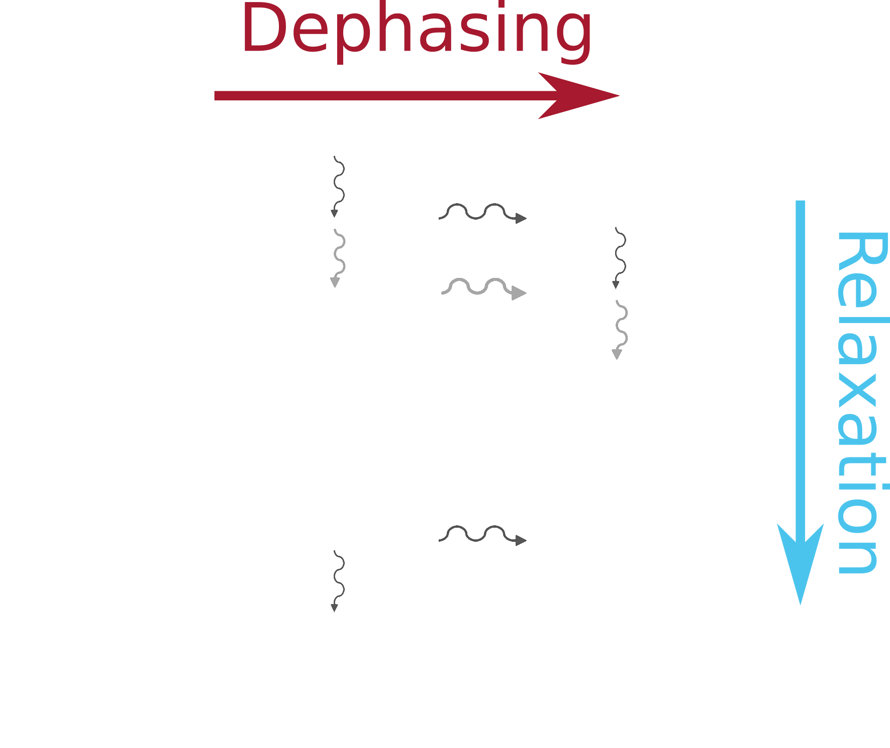
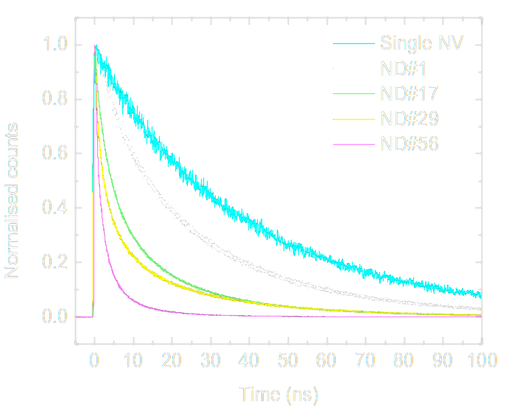
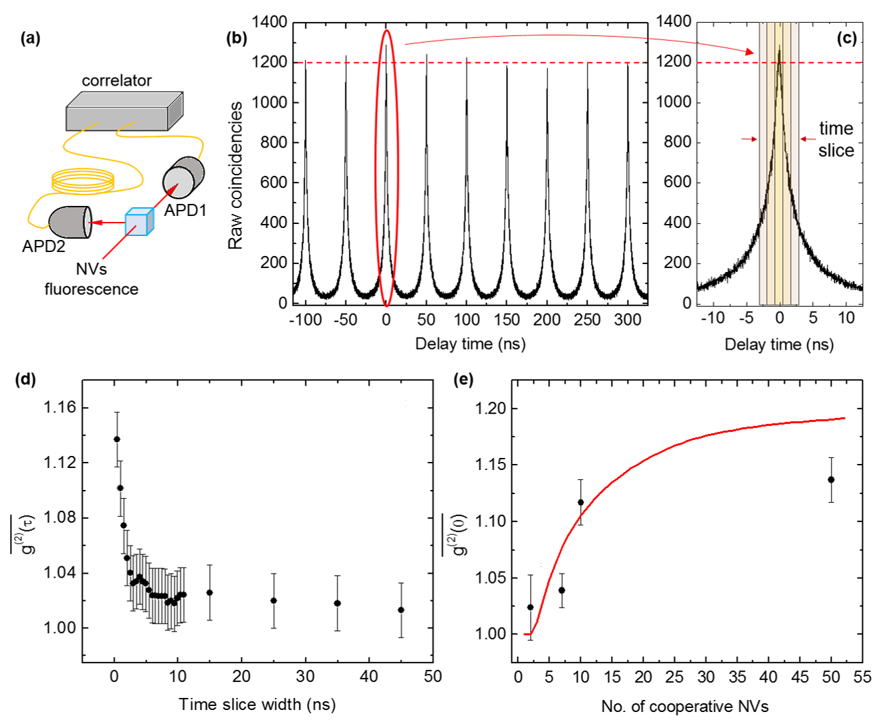

Spontaneous Superradiance from Single Diamond Nanocrystals
Sarah Kaiser, Carlo Bradac, Mattias Johnsson, Matthew van Breugel, Ben Baragiola, Rochelle Martin, Mathieu L. Juan, Gavin Brennen, Thomas Volz
Department of Physics and Astronomy, Macquarie University
ARC Centre for Engineered Quantum Systems
Motivation
Cooperative behavior of NV in Nanodiamonds

Centers must be indistinguishable
- spatial: $V << \lambda^3$
- spectral
- spin manifold
Modeling Cooperative Effects
How to describe cooperation?
Dicke States
$|J,M\rangle =\sqrt{\frac{(J+M)!(J-M)!}{(2J)!}}\sum_{perm}|\underbrace{111...}_{\text{J+M}}\underbrace{000...}_{\text{J-M}}\rangle$
R H Dicke [doi:10/cbq3mc]
| $N$ | # of two-level emitters | $J=\frac{N}{2}$ | total spin for the collective system |
|---|---|
| $M\in\{-J,J\}$ | projection of the spin state, J+M excited emitters |
R H Dicke [doi:10/cbq3mc]
Example: Dicke States
| $M,~N=3$ | |
|---|---|
| 3/2 | $|111\rangle$ |
| 1/2 | $|110\rangle+|101\rangle+|011\rangle$ |
| -1/2 | $|100\rangle+|010\rangle+|001\rangle$ |
| -3/2 | $|000\rangle$ |
What degrades superradiance?
(Local) Distinguishability.
- spin–spin coupling
- local phononic environments
- localized charge fields
- lattice stress/strain
- etc.
Distinguishable = Dephasing
Superradiance model parameters
- Domain Size: max # of cooperating centers
- Initial state of system
- Bright/dark decay rates
- Local dephasing rates
C Bradac et al. [arXiv:1608.03119]
Observations
Decay rates for excitations
Comparing rates to model:
Initial state exploration
Extensions: Low temp
- # of cooperating centers : ✖
- Initial state of system : ➖
- Bright/dark decay rates : ?
- Local dephasing rates : ✔?
B. B Prasanna Venkatesh, M L Juan,
O Romero-Isart [arXiv:1705.07847]
Extensions: Low temp
Summary:
Seen:
- Ultrafast radiative lifetimes $\approx1\text{ns}$
- Photon correlations consistency check model
To Do:
- Temperature dependance?
- Other color centers?
- Expand model: Dipole dipole interactions
- Super absorption?
Aside: Research background